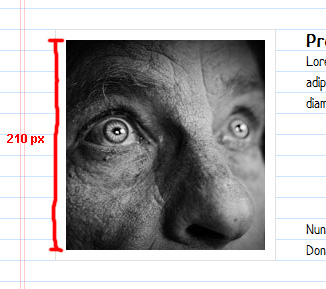
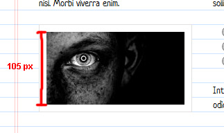
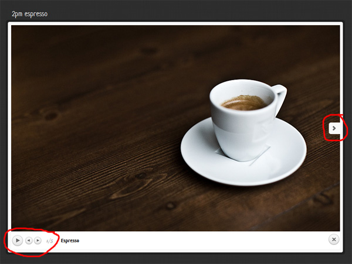
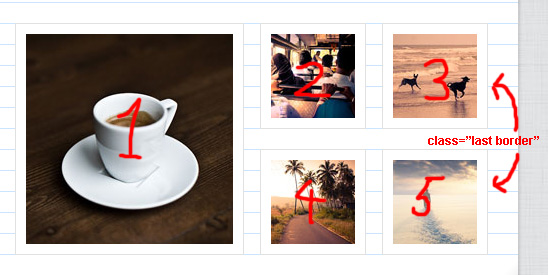
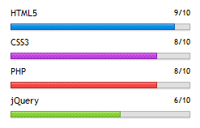
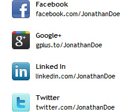

Created: 27/12/2011
By: graphic_dev
Email: jocke_aglo@hotmail.com
Thank you for purchasing my template. If you have any questions that are beyond the scope of this help file, please feel free to email via my user page contact form here. Thank you!
Please rate this template at Themeforest if you are satisfied with it! If you for some reason don't want to give a 5 star rating; please let me know why and maybe I can sort it out. I've spent a lot of time making this template so it is important that you are happy with your purchase.
NOTE: The Facebook Like Box won't load if you open the website locally - you will have to upload it to a server in order for it to work properly.
The structure consists of the following main components:
Each page can have one or multiple tabs. Tabs are essentially the same things as pages - the only difference is that you navigate between them by clicking on the arrows in the header (see screenshot above). In the demo, the About Me page has one tab and the Work Page has six tabs. You can use any number of tabs.
Each tab is wrapped by a div with the class tab (<div class="tab">). To add multiple tabs on a page, simple add more tabs to that page. See the following example to add two tabs to the About Me page:
<!--##############################################-->
<!--################ About Me #################-->
<!--##############################################-->
<div id="about-me">
<div id="about-me-nav">
<a class="prev" href="#" title="Previous"><img src="img/arrow-left.png" alt="Previous"></a>
<a class="next" href="#" title="Next"><img src="img/arrow-right.png" alt="Next"></a>
</div>
<div id="about-me-pages">
<!--################### Tab 1 ###################-->
<div class="tab">
<div class="full-width">
FULL WIDTH CONTENT HERE
</div>
</div>
<!--################### Tab 2 ###################-->
<div class="tab">
<div class="col1">
COLUMN 1 CONTENT HERE
</div>
<div class="col2">
COLUMN 2 CONTENT HERE
</div>
</div>
</div>
The About Me page above has two tabs. Tab one consists of a full width column and tab two has two columns.
If you want a page to have one tab, simply add one tab to that page.
<!--##############################################-->
<!--################ About Me #################-->
<!--##############################################-->
<div id="about-me">
<div id="about-me-nav">
<a class="prev" href="#" title="Previous"><img src="img/arrow-left.png" alt="Previous"></a>
<a class="next" href="#" title="Next"><img src="img/arrow-right.png" alt="Next"></a>
</div>
<div id="about-me-pages">
<!--################### Tab 1 ###################-->
<div class="tab">
<div class="full-width">
FULL WIDTH CONTENT HERE
</div>
</div>
</div>
The About Me page above has one tab, which consists of a full width column.
Each page can have a one column (full width) or a two column layout.
Use the class "full-width" on the div right after the start of the tab. Below is an example of a tab with a full width layout:
<div class="tab">
<div class="full-width">
FULL WIDTH CONTENT HERE
</div>
</div>
To use a two column layout, add two <div> elements with the classes "col1" and "col2". Below is an example of a tab with a two column layout:
<div class="tab">
<div class="col1">
COLUMN 1 CONTENT HERE
</div>
<div class="col2">
COLUMN 2 CONTENT HERE
</div>
</div>
The Notebook template has been designed and developed with a good vertical rhythm so that everything flows naturally. The lineheight is 21 pixels, which means that images should have a height of multiples of 21. This way the vertical rhythm won't break.
So ultimately the height should be 21 pixels, 42 pixels, 63 pixels and so on (up to 210 pixels). Read more about veritcal rhythm in this article (not necessary for the use of this template).
 Add the class border to all images to add a white padding and a gray border around the image (like a frame).
<img class="border" src="../img/image.jpg" />
Galleries are collection of images. Once you click on an image to zoom it; a slideshow will be displayed with all the images in the gallery (see screenshot below).
A gallery should be wrapped with a div that has the class "gallery". If the gallery contains images on multiple rows, then the class last should be added to the last image of each row. See example below.
<div class="gallery"> <a href="img/picture1.jpg" data-rel="prettyPhoto[gallery2]" title="Espresso"><img class="border" src="img/david-thunander/espresso-210x207.jpg" width="207" height="210" alt="2pm espresso" /></a> <a href="img/picture2.jpg" data-rel="prettyPhoto[gallery2]" title="Bus"><img class="border" src="img/david-thunander/bus-84x84.jpg" width="84" height="84" alt="The Bus to Something New" /></a> <a href="img/picture3.jpg" data-rel="prettyPhoto[gallery2]" title="Dogs"><img class="last border" src="img/david-thunander/dogs-84x84.jpg" width="84" height="84" alt="Dogs of Freedom" /></a> <a href="img/picture4.jpg" data-rel="prettyPhoto[gallery2]" title="Road"><img class="border" src="img/david-thunander/road-84x84.jpg" width="84" height="84" alt="The Road to Paradise" /></a> <a href="img/picture5.jpg" data-rel="prettyPhoto[gallery2]" title="Walking"><img class="last border" src="img/david-thunander/walking-84x84.jpg" width="84" height="84" alt="Got Snow?" /></a> </div>
Notice that the class last has been added on picture3 and picture5, which are the last images on row 1 and 2. (The other images only has the class border).
The prettyPhoto plugin is used for the zoom effect when you click on images. To activate this effect, wrap the image inside an anchor. The anchor should link to the larger image and the data-rel attribute should be given the value of prettyPhoto (data-rel="prettyPhoto").
You can group images in prettyPhoto by adding a group name to the data-rel attribute (ie rel="prettyPhoto[GROUPNAME]"). By grouping several images, they will be showed as a slideshow in prettyPhoto. Try clicking on any image in a gallery in a demo. You will see that you can move to the next and previous images in the bottom left corner in prettyPhoto.
<div class="gallery"> <a href="img/picture1.jpg" data-rel="prettyPhoto[gallery2]" title="Espresso"><img class="border" src="img/david-thunander/espresso-210x207.jpg" width="207" height="210" alt="2pm espresso" /></a> <a href="img/picture2.jpg" data-rel="prettyPhoto[gallery2]" title="Bus"><img class="border" src="img/david-thunander/bus-84x84.jpg" width="84" height="84" alt="The Bus to Something New" /></a> <a href="img/picture3.jpg" data-rel="prettyPhoto[gallery2]" title="Dogs"><img class="last border" src="img/david-thunander/dogs-84x84.jpg" width="84" height="84" alt="Dogs of Freedom" /></a> <a href="img/picture4.jpg" data-rel="prettyPhoto[gallery2]" title="Road"><img class="border" src="img/david-thunander/road-84x84.jpg" width="84" height="84" alt="The Road to Paradise" /></a> <a href="img/picture5.jpg" data-rel="prettyPhoto[gallery2]" title="Walking"><img class="last border" src="img/david-thunander/walking-84x84.jpg" width="84" height="84" alt="Got Snow?" /></a> </div>
All three images in the above example are grouped together with a name of gallery3. Note that all images are linking to the same image (800x400.gif), so the three slides will show the same image.
Chose the pattern that you like by using the Settings in the online demo (click on the top left settings icon). Click on the different patterns to toggle between them. Once you have found a pattern that you like, hover over the preview image again to see the name of that pattern. Let's say you want to use the pattern "wavecut". Open up the style.css file in the css folder. Find the code below and change to your pattern (in this case wavecut.png).
body {
overflow:hidden;
background:url(../img/bg/patterns/wavecut.png) repeat;
}
 You can display your skills in five colors:
<div class="skill">
<p>HTML5 <span>9/10</span></p>
<div class="progress-bar blue">
<span style="width:90%">.</span>
</div><!-- .progress-bar -->
</div>
Each skill is wrapped in a div with the class skill. All you have to change is the name of the skill (HTML 5), the grade (at two places: 9/10 and width:90%) and the color of the progress bar (blue).
 75 social icons are included in the Notebook template (see img/icons/social). Adding a link to a social network is easy. Go to the icons folder and check the name of the icon that you want to use (ie facebook_32.png). Then change the link inside the href attribute, the image alt attribute, the name of the network (inside the strong element) and the link that you want to display on the second line.
<!-- Network 1 -->
<a class="network" href="http://www.facebook.com/JonathanDoe">
<img src="img/icons/social/facebook_32.png" alt="Facebook" />
<strong>Facebook</strong>
facebook.com/JonathanDoe
</a>
<!-- End Network 1 -->
You can add a Facebook Like Box for your Facebook page. All you have to do is add the code below and change the link to your Facebook page inside the data-href attribute:
<div id="fb-root"></div> <div id="fb-wrapper"> <div class="fb-like-box" data-href="http://www.facebook.com/platform" data-width="215" data-height="225" data-show-faces="true" data-border-color="#7992c9" data-stream="false" data-header="false"></div> </div>
The Facebook Like Box uses asynchronous loading, which means that that it won't affect the load time of the rest of the site and that it won't have a negative affect on your Google page speed score.
NOTE: The Facebook Like Box won't load if you open the website locally - you will have to upload it to a server in order for it to work properly.
The contact form uses validation to check that all mandatory fields are filled in. It also makes sure that the e-mail is valid. The send button comes in five colors:
The button will adjust the width automatically if you change the text. You change the color of the button by changing its class. The following code will give a blue button with the text "Let's do this!".
<button value="submit" class="blue" type="submit"><span>Let's do this!</span>
Once the form is filled in correctly and the user has clicked on the submit button; a success message will be shown. You can change this message, the address where you want the message to be sent and other details in the file sendemail.php (found in the php folder):
// Your name $myname = 'George Johnson'; // Your email $myemail = 'your@email.com'; // Email subject $subject = 'Contact Form'; // Success message $success = 'Your message has been sent!';
To change the loading text, open custom.js (js folder) and find this:
// Form
$("#contact-form").validate({
submitHandler: function(form) {
$(form).ajaxSubmit(options);
$('#form-output p').remove();
$('#form-output').append('<p class="loading">Sending your message...</p>');
return false;
}
});
Simply change the text "Sending your message..." to whatever message you want to be shown.
To activate Google Analytics, simply go to the bottom of the index.html file and change UA-12345678-1 to your Google Analytics ID:
<!-- Google Analytics -->
<script type="text/javascript">
var _gaq = _gaq || [];
_gaq.push(['_setAccount', 'UA-12345678-1']); /* Change to your Google Analytics ID */
_gaq.push(['_trackPageview']);
(function() {
var ga = document.createElement('script'); ga.type = 'text/javascript'; ga.async = true;
ga.src = ('https:' == document.location.protocol ? 'https://ssl' : 'http://www') + '.google-analytics.com/ga.js';
var s = document.getElementsByTagName('script')[0]; s.parentNode.insertBefore(ga, s);
})();
</script>
<!-- End Google Analytics -->
Notebook uses several jQuery Plugins. For support on how to customize these plugins, please use their support:
Use the file css/custom.css for overriding any CSS code. By doing this, you make sure that you can download future versions of the template while keeping you own customizations.
Thanks again for purchasing the Notebook template. I will do my best to help if you have any questions that is not covered in this documentation. If you have a more general question relating to the themes on ThemeForest, you might consider visiting the forums and asking your question in the "Item Discussion" section.
graphic_dev